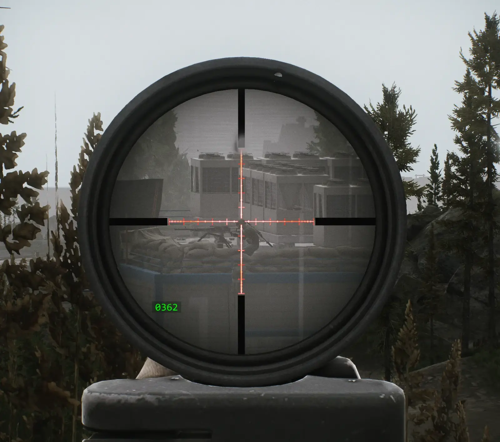

ScopeRangefinder
- Downloads
- 4,372
- Favourites
- 37
- Mod lists
- 42
Adds a compact rangefinder readout to magnified optic scopes in SPT. The display is rendered inside the scope view, follows the optic while aiming, and can be adjusted per scope.
Also adds auto zero: zero the optic to the measured distance, to the meter, with no distance limit, and accounting for the loaded ammo, weapon accuracy, and every other dynamic factor the game itself uses for calibration. No more picking the nearest fixed dial step.
The mod includes layout presets for vanilla scopes and an in-game layout editor for fine tuning.
Features
- Range readout while aiming through magnified optics
- Scope-bound display that moves with the optic view
- Works with all optic scopes, including thermal and night vision
- Included vanilla scope layout presets
- Per-scope user layout overrides with
OffsetX,OffsetY, andScale - In-game layout editor with live editing, save, reset, and copy scope key
- Optional Wilcox RAPTAR ES requirement
- Optional requirement for the attached RAPTAR to be switched on
- RAPTAR-style
0123or decimal045.0readout format - Configurable text and background color, transparency, size, and font.
- Optional background plate behind the readout
- Auto zero: precise, meter-accurate zeroing to the measured distance, per hotkey or continuously, instead of the nearest fixed dial step
- Optional predicted bullet trajectory and impact dispersion ring, a great way to build a feel for THE CITY’s ballistics
- Makes BetterZeroing, ExtendedZeroRanges, and AutoRanging unnecessary; compatible with all three if installed anyway (see Notes)
- Fallback screen overlay mode for PiP-Disabler compatibility
- Minimal performance impact (one raycast every 0.1 s while scoped)
Installation
As usual, unzip to your SPT directory.
All configuration options explained in README.md

Let me know if you run into any problems or have suggestions for improvement.
Version
2.1.0
- Added auto zero: precise, meter-accurate zeroing to the measured distance, per hotkey or continuously, instead of the nearest fixed dial step
- Added optional predicted bullet trajectory and impact dispersion ring, a great way to build a feel for THE CITY’s ballistics
See full CHANGELOG.md
Version
2.0.0
Finally managed to render the range readout actually in the scope without causing all sorts of glitches 🥳
All other render modes were removed and the mod slimmed down, only a simple fallback for PiP-Disabler remains.
Important Note
If you already have custom per-scope offset presets defined, those will be deleted on first start.
That is necessary because they would no longer align with the new coordinate system.
Vanilla presets are now shipped and stored seperatly to your own.
See full CHANGELOG.md
Version
1.1.0
- Added a new
ProjectedOverlayrender mode that can move with the optic view. - Added per-scope layout presets for vanilla magnified scopes.
- Added an in-game layout editor for adjusting offset and scale while playing.
- Added optional Wilcox RAPTAR ES requirements, including active-state detection.
- Added configurable text color, background color, transparency, size, and font.
- Added experimental
InScopeCamerarender mode that actually renders inside the scope. - Added compatibility handling for PiP-Disabler fallback behavior.
See full CHANGELOG.md
Version
1.0.1
Added compatibility for Picture in Picture Disabler by Fiodor
Version
1.0.0
Initial Release